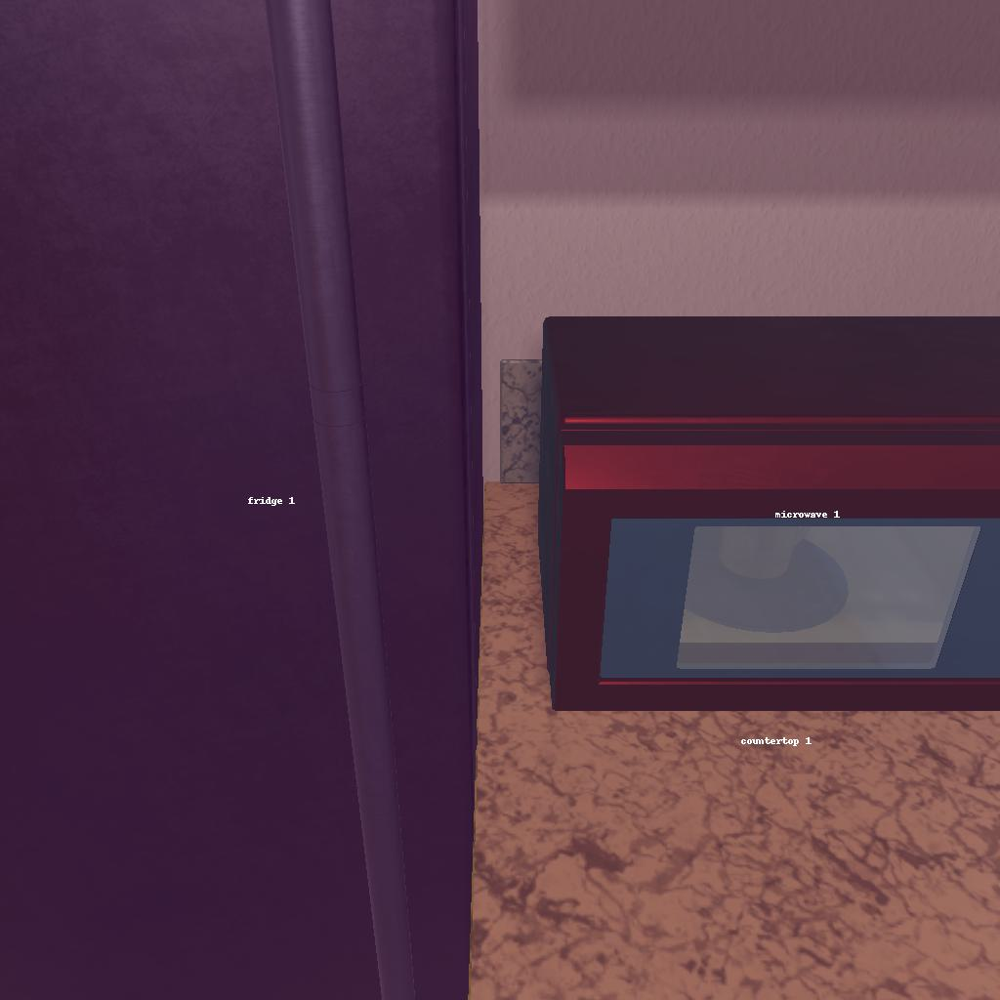

---------------------------------------------------------task: 18---------------------------------------------------------
--------------------------------------------------------------------------------------------------------------------------------------------------------------------
--------------------------------------------------------------------------------------------------------------------------------------------------------------------
Step:--------------------------------------------------------------------------1-------------------------------------------------------------------------------
----------------------------------------
VLM Prompt:
Image1:
**Instruction**
1. Analyze the provided image to identify all visible household objects, focusing on those relevant to the task description "cool some pot and put it in cabinet."
2. Use the analysis of the image and the task hint "The agent must find an object of the desired type, pick it up, go to a fridge, cool the object with the fridge, then find the correct location to place it, and put it down there. The agent does not need to use the fridge button or open the fridge to cool the object, and the agent just needs to do action that is "cool the object with the fridge"." to answer the question: what is the most reasonable action in the choices for the task description "cool some pot and put it in cabinet"?
4. Decide and write the answer using the template: The answer is: (i): , where i is the real number. If there is no desired object in the image, search every place based on **Initial Observation** to find the object. And if no one is exactly correct, choose a similar answer.
**Initial Observation**
You are in the middle of a room. Looking quickly around you, you can see cabinet (1-20), countertop (1-3), coffeemachine (1), toaster (1), sink (1), fridge (1), microwave (1), garbagecan (1), drawer (1-3), sinkbasin (1), stoveburner (1-4), shelf (1-3)
**Answer Choices**
(1): go to cabinet 1
(2): go to cabinet 2
(3): go to cabinet 3
(4): go to cabinet 4
(5): go to cabinet 5
(6): go to cabinet 6
(7): go to countertop 1
(8): go to coffeemachine 1
(9): go to cabinet 7
(10): go to toaster 1
(11): go to cabinet 8
(12): go to sink 1
(13): go to microwave 1
(14): go to garbagecan 1
(15): go to cabinet 9
(16): go to cabinet 10
(17): go to countertop 2
(18): go to cabinet 11
(19): go to cabinet 12
(20): go to drawer 1
(21): go to countertop 3
(22): go to drawer 2
(23): go to cabinet 13
(24): go to sinkbasin 1
(25): go to cabinet 14
(26): go to drawer 3
(27): go to stoveburner 1
(28): go to stoveburner 2
(29): go to stoveburner 3
(30): go to cabinet 15
(31): go to stoveburner 4
(32): go to cabinet 16
(33): go to cabinet 17
(34): go to cabinet 18
(35): go to cabinet 19
(36): go to cabinet 20
(37): go to shelf 1
(38): go to shelf 2
(39): go to shelf 3
(40): open fridge 1
(41): close fridge 1
(42): examine fridge 1
**Answer**
Let's think step by step by following the instructions.
----------------------------------------
----------------------------------------
Original Response:
The task is to "cool some pot and put it in cabinet." Based on the image, we can see a fridge (fridge 1) and a countertop (countertop 1), which are relevant to the task. The agent does not need to use the fridge button or open the fridge to cool the object; they just need to cool the object with the fridge.
Since the pot is not visible in the image, the agent must search every place based on the Initial Observation to find the pot.
After finding and cooling the pot with the fridge, the next step is to put it in a cabinet. However, the image does not show any cabinets, so the agent will need to search for one based on the initial observation that there are cabinets numbered 1-20.
Since we cannot determine the exact cabinet from the image, we can choose a similar answer from the provided choices that mentions going to a cabinet.
The answer is: (1): go to cabinet 1.
----------------------------------------
----------------------------------------
>>> Refine Original VLM Response and Get Pure Action: go to cabinet 1
----------------------------------------
-----------------------------------------------------------------
Running time: 12.65866994857788 seconds
Total Money: 6.113260000000002
-----------------------------------------------------------------
-----------------------------------------------------------------
Text Observation:You arrive at loc 0. The cabinet 1 is closed.
-----------------------------------------------------------------
UNSUCCEED